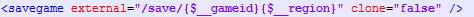

Newer Troubleshooting
1. What is the root of the SD card?
When you double click the SD card icon in My Computer, the window that opens is the root.
2. Letterbomb doesn't seem to trigger.
First, recheck you have followed the steps exactly as described.
If you're certain you have, try cutting the "Blue Wire" instead of the "Red Wire" on the HackMii website, and try again with that pack. If that still doesn't work, try using this to load the HackMii Installer/Riivolution.
If you're certain you have, try cutting the "Blue Wire" instead of the "Red Wire" on the HackMii website, and try again with that pack. If that still doesn't work, try using this to load the HackMii Installer/Riivolution.
3. The HackMii installer crashes on the first screen.
NOTICE: If your Wii has a "dirty" IOS 58 or 37 installed,
the HackMii Installer will bump the waiting time to 24 Hours. Reinstall a clean IOS 58 or 37.
The HackMii installer will also not work under SNEEK.
If two or three minutes have passed, press and hold the POWER button on your Wii until it shuts down and try again.
If it happens again, skip to HERE.
4. The Homebrew Channel appears inverted.
You have modified IOSes installed on your Wii (usually for piracy purposes). In Homebrew Channel, press the Home Button. In the bottom left corner, there should be an IOS mentioned (albeit inverted) which you'll have to reinstall a clean version of to get rid of this issue.
5. Riivolution requests to install IOS 37.
This means a dirty IOS37 was installed on your Wii (usually for piracy purposes). Installing this clean version is safe.
6. Nothing appears in the Riivolution menu.
Make sure that SD:/riivolution/NewerSMBW.xml exists. If it does, make sure your SD card is formatted to FAT.
7. The game disc isn't recognised by Riivolution ("Insert a disc" message).
Riivolution will not work with burned media on most modchips available. Note that if you have a modchip, a retail game disc will still work.
8. The game just boots normally with no changes.
Make sure the option in Riivolution's menu is set to "Enable". If it is, try reinstalling the game. Perhaps you either put the game in the wrong folder or didn't unpack something.
9. A "FATAL ERROR: System file not found on the disc." message is displayed after booting.
Assuming everything is installed correctly, this either means you're using an unsupported version of the game (Korean, Taiwanese) or Nintendo released a new game revision that we don't know of.
If you're using a PAL, NTSC or JPN disc, and you're sure your installation isn't missing any files, please contact us on rvlution.net.
If you're using a PAL, NTSC or JPN disc, and you're sure your installation isn't missing any files, please contact us on rvlution.net.
10. "An error occured during the process of reading from or writing to the source device" (or similar) message appears, or the game crashes while trying to write or read a save file.
Make sure that your SD Card isn't locked from writing in any way (check the little locking switch on it, for example), and that there is enough space to write the save (about 50KB should be enough).
If nothing seems to work, you can use a workaround and delete this line from /riivolution/NewerSMBW.xml:
If nothing seems to work, you can use a workaround and delete this line from /riivolution/NewerSMBW.xml:

Keep in mind, though, that the game will now save to the Wii Console Memory (into NSMBW's save slot, under a different filename).
11. An "An error has occured! Please..." message appears.
This issue may happen due to disc reading issues and is not related to Newer.
Alternately, it's possible that you have one of the few modchips that do work with Riivolution and are using burned media. In that case, this message could appear because of the main.dol not being patched to remove the NSMBW BCA protection check.
Alternately, it's possible that you have one of the few modchips that do work with Riivolution and are using burned media. In that case, this message could appear because of the main.dol not being patched to remove the NSMBW BCA protection check.
12. The game crashes at some point.
First off, make sure you have the latest available pack installed, and that it's installed correctly (current version: 1.2.0).
Then, make sure that only one hack is being loaded at a time (only one is set to "Enabled" in the Riivolution menu).
If the issue happens regardless, contact us on rvlution.net.
If the issue happens regardless, contact us on rvlution.net.
13. The game stutters when playing music/things take really long to load.
This is entirely dependent on how fast your source device is. If you have a crappy and/or old SD Card or USB Stick, try getting a newer one.
If you're loading the game from an USB Hard Drive, check if your device isn't fragmented too much, and if it is, try defragmenting it.
Lastly, do NOT play the game via RiiFS.
If you're loading the game from an USB Hard Drive, check if your device isn't fragmented too much, and if it is, try defragmenting it.
Lastly, do NOT play the game via RiiFS.
14. The Wii consistently lights up while playing music.
This happens when Riivolution is reading files, and there is no way to change it.
15. The original game plays in French/German/Spanish/Japanese/etc, but Newer appears in English.
The game does not support other languages, and will always operate in English.
16. Things from other hacks appear.
Newer may use a couple objects from past specials produced by us (Newer: Falling Leaf, Newer: Summer Sun, Newer: Holiday Special, Another Super Mario Bros. Wii), so this may be a normal occurrence.
If things are very out of place, though, or not from those three games, make sure you only have one hack "Enabled" in the Riivolution menu.
If things are very out of place, though, or not from those three games, make sure you only have one hack "Enabled" in the Riivolution menu.
17. The game crashes on the Wrist Strap warning screen.
The game will sometimes react this way if the SD card you inserted is write-protected. Remove your SD card, and press the lock switch to the "unlocked" position.